How to Recognize It
The all-aluminum, multi-piece "skeleton" frame identifies a Type E.
See the gallery of detail photos below. The Workmate 79-001 Type Study spreadsheet shows how all ten Types compare.
Black & Decker Workmate 79-001 Type E
The 79-001 Type E was the first Workmate sold in the United States, as a market trial by Black & Decker in 1974. It was made in England, hence the "E". The original English model WM325 Type 1, first sold there in September 1972, had a wooden foot board. By 1974 it had evolved to the WM325 Type 3 with a foot board of galvanized steel. This was the model that was imported to the U.S. as the 79-001 Type E. I have found one 79-001 Type E that even still has its English WM325 label attached, shown in the photo gallery below. Also, if you look carefully at the U.S. instruction manual for the Type E, you can see the wooden foot board of the original WM325 Type 1 in the photos and drawings.
Unlike all the subsequent Types, its entire frame is made of cast aluminum, approximately 27 pieces. The footrest is the only major component not of aluminum, instead made of galvanized steel. The frame design has earned it names like “skeleton" frame, “spider-legged", and “lunar module”. All subsequent Types used stamped steel for most of the frame parts, although the aluminum H-frame was retained through the 79-001 Type 5, and also used on the 79-004 in the U.S., the Jobmate 3980 in Canada, and the WM625 in the UK and Europe.
The two-digit year of manufacture of the Type E is cast into the inner face of the folding rear dual-leg piece. This is the piece whose outer face has the text "Dual-Height Professional". Look on the other side of that for a small circle resembling a clock face. See the photo near the bottom of this page. So far all of these marks I have documented on the Type E have been "74".
Notable Characteristics
Unlike all the subsequent Types, its entire frame is made of cast aluminum, approximately 27 pieces. The footrest is the only major component not of aluminum, instead made of galvanized steel. The frame design has earned it names like “skeleton" frame, “spider-legged", and “lunar module”. All subsequent Types used stamped steel for most of the frame parts, although the aluminum H-frame was retained through the 79-001 Type 5, and also used on the 79-004 in the U.S., the Jobmate 3980 in Canada, and the WM625 in the UK and Europe.
The two-digit year of manufacture of the Type E is cast into the inner face of the folding rear dual-leg piece. This is the piece whose outer face has the text "Dual-Height Professional". Look on the other side of that for a small circle resembling a clock face. See the photo near the bottom of this page. So far all of these marks I have documented on the Type E have been "74".
Notable Characteristics
- As noted above, The Type E is the only Workmate with an all-aluminum frame. As a result, it weighs just under 25 pounds, six to nine pounds less than all other 79-001's except the Type 5.
- The Black & Decker logo (a hex nut with "B&D" in the center) is cast into the aluminum vise-handle arms.
- The crank handles and swivel pegs are made of blue plastic. A couple of bushings and spacers are as well. The lettering "Black & Decker" and "Workmate" on the H-frames is also blue. On a few Type E's, all of these trim items are black.
- Each jaw has ten holes for the swivel pegs. This was eventually reduced to nine in most of the later Types.
- The peg holes are reinforced with steel liners, found only on the Type E. These are susceptible to rust, which can be very hard to remove when it occurs.
- The left and right assemblies that hold the vise screws have gradations scribed every centimeter on their top surface. These are visible when you look down between the open jaws, providing a rough guide to how wide the jaws are open.
- On the bottom of the rear jaw on each side is a stud attached with a screw. As the jaws are unscrewed to their full opening, the stud hits a stepped portion of the upper frame to prevent the jaws from going any farther and coming off. These studs are often bent or broken because someone tried too hard to open the jaws farther.
- The lower side frame pieces have an unused screw hole near the lower pivot point of the side strut, as a result of those side pieces doing double duty in the Workmate WM225 and WM325.
- The rubber feet are cone-shaped, sometimes likened to suction cups in shape (but not function).
- The four rear feet (two upper, two lower) are all threaded (metric, M8-1.25) for leveling, while the four front feet are push-in, non-adjustable. The front feet can fall out, so they are often missing.
- The front legs fold out individually directly to the left and right, with hinged struts locking them into the upright position. This means that as you work at the front of the Workmate, there are no protruding legs to get in your way. The rear legs are part of a single assembly that folds out directly to the rear, also using hinged struts. When you work at the side or back, you do have to mind the extended legs.
- The latches for the top can hold it at three slightly different heights, but the two lower positions are referred to as “intermediate safety positions”. The setup diagram in the instruction manual shows the upper position as “Correct” and the two lower ones as “Wrong”. The lowest position is not very secure, but the middle position seems solid enough to use. I have tested it by sitting on it in the middle position, with no noticeable problems. Use at your own risk!!
- The Type E at its full height is taller than the later Types, by about an inch.
Click on any image below to open the gallery of full-screen images.

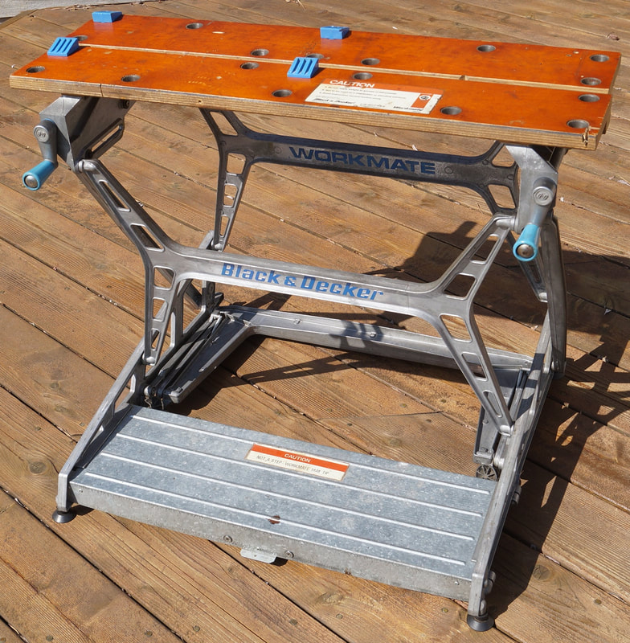

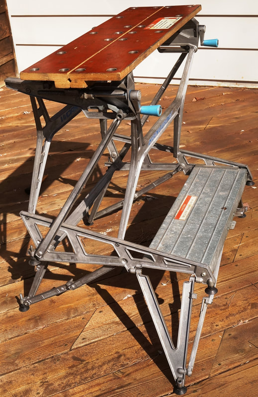

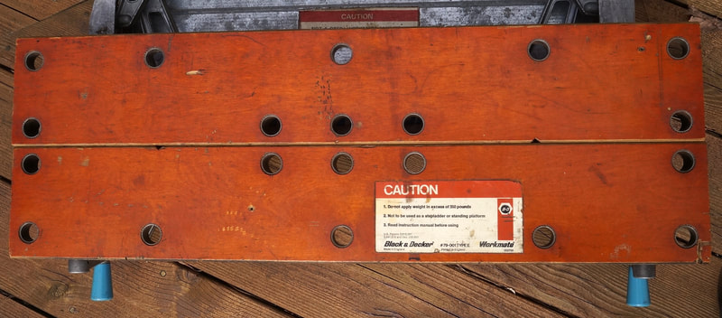

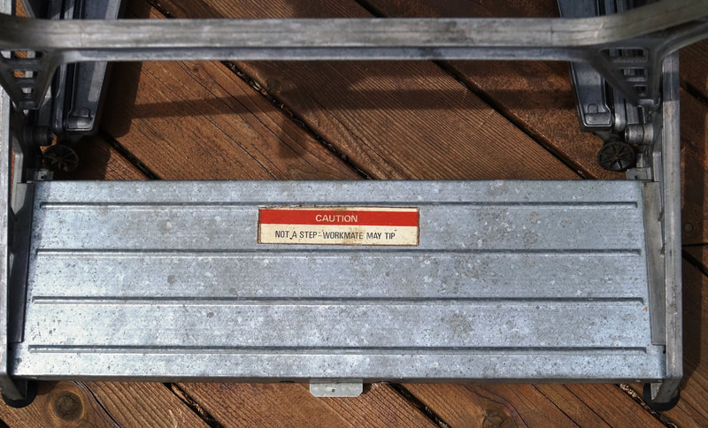

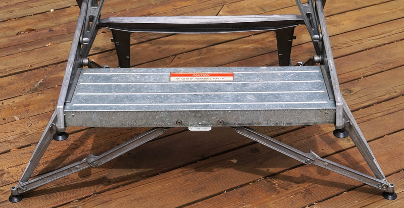

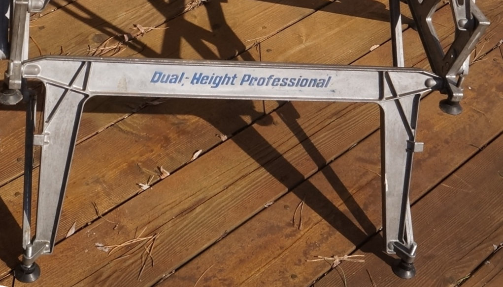

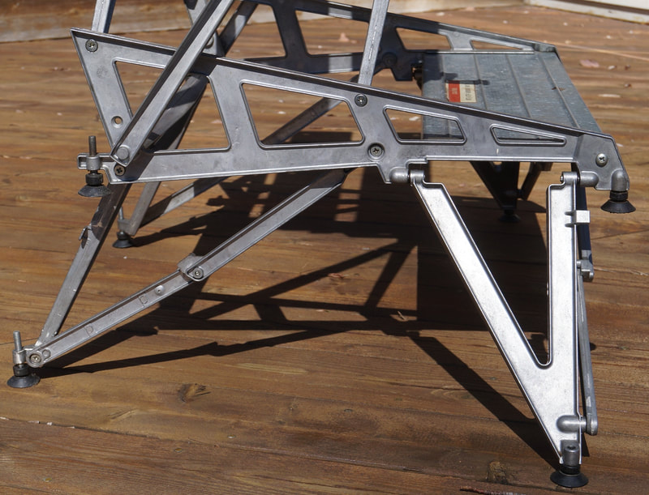


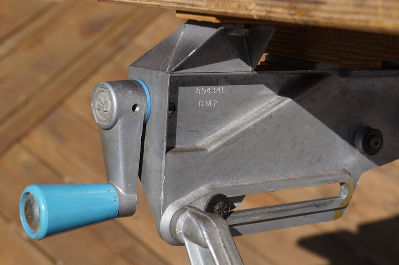

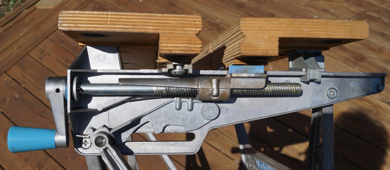


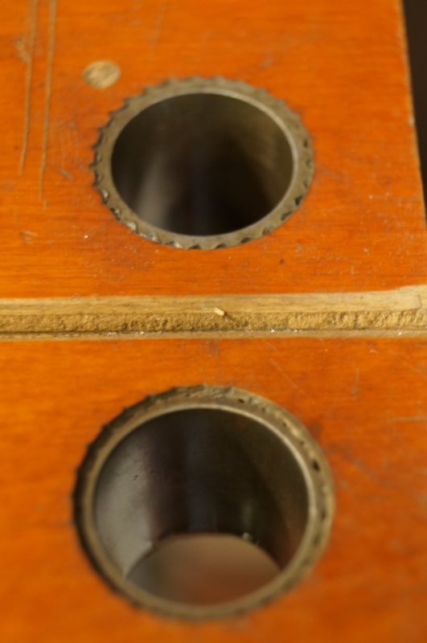


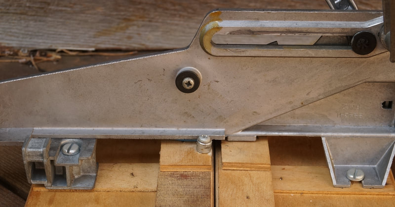

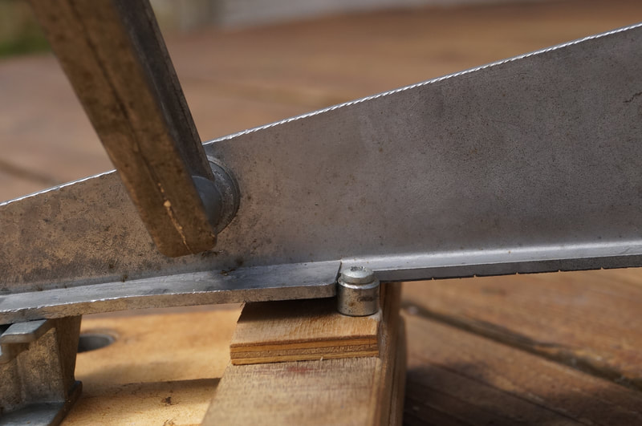

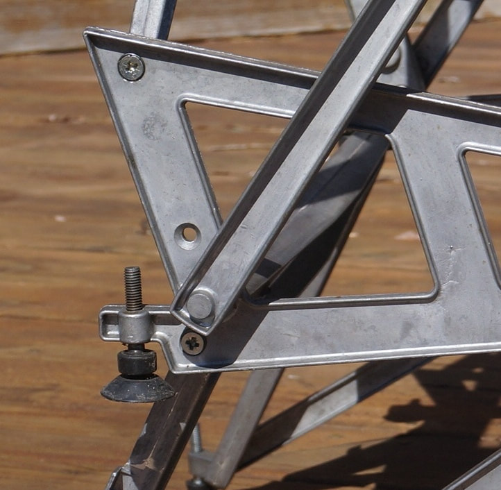

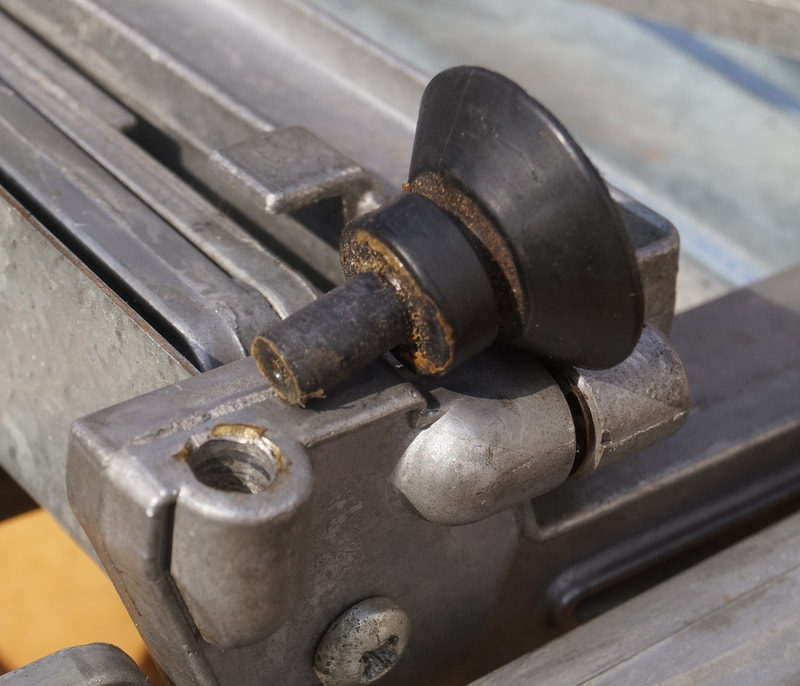

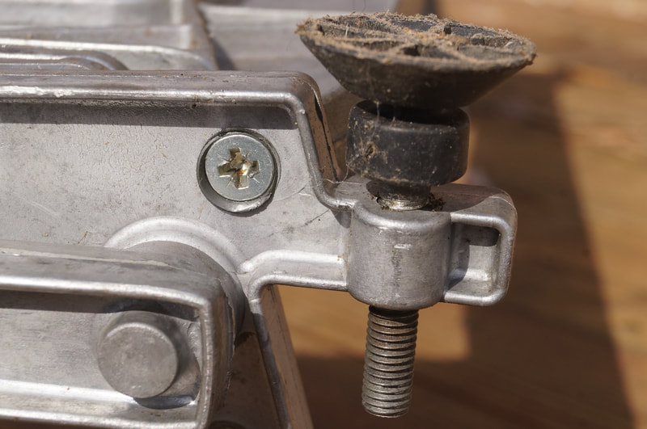


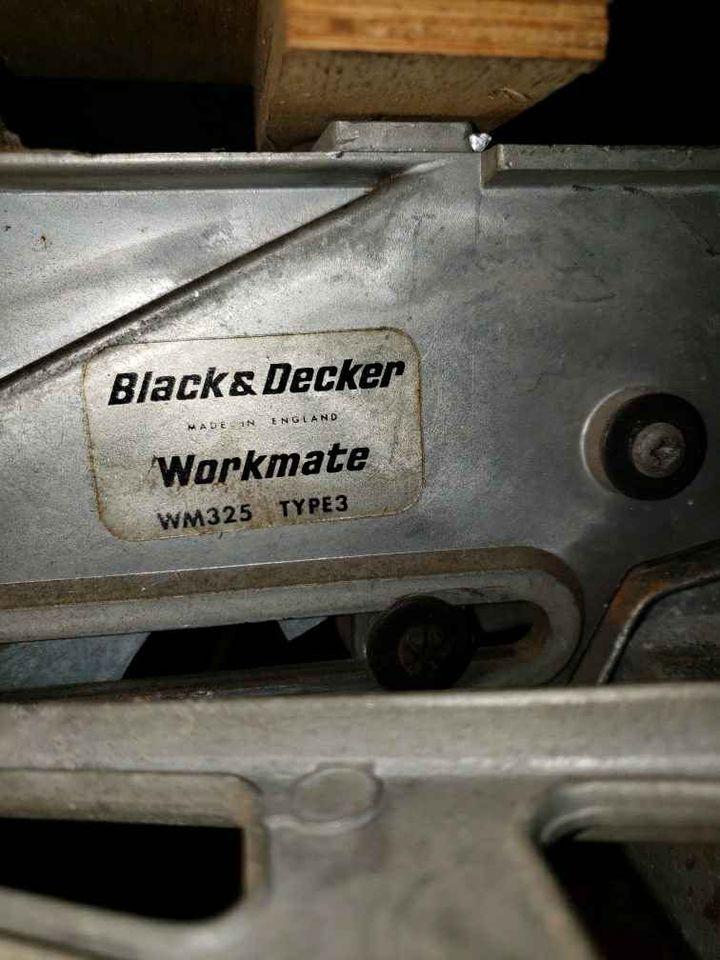

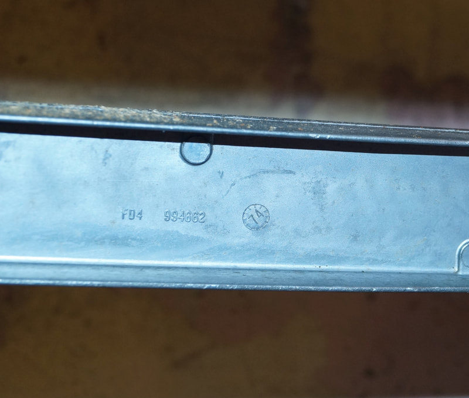

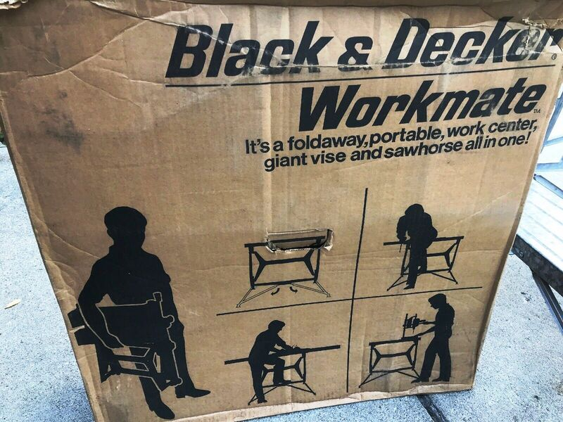

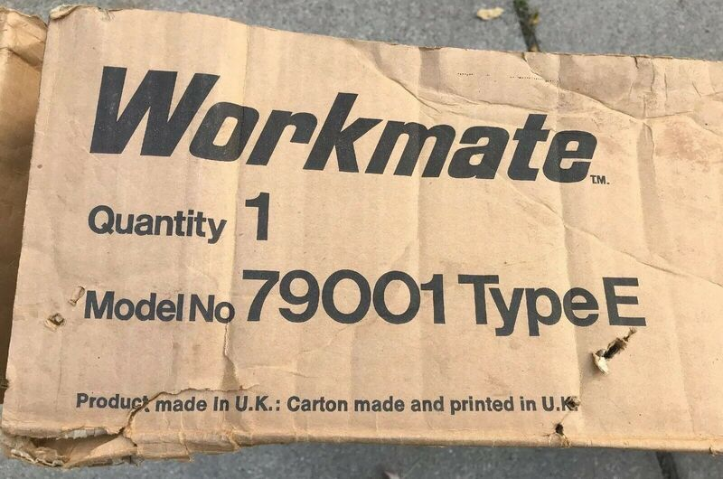